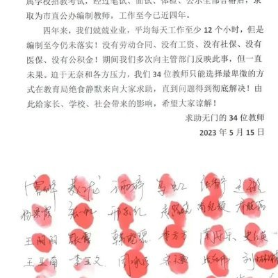

鸿哎彬
@hongaibin
RT @dagongxinwen: 堵门犯法、拉横幅犯法、爬塔吊都犯法，想把血汗钱要回来已几乎不可能。
追讨拖欠工资的人被抓进去了，这世界也是个笑话。
宋小鱼1月13日创作的这首《过年关》真实反映中国工人被拖欠工资这荒唐现象。唱歌讨薪总该不是犯法了吧！ https://t.co…

工业区打工仔
@dagongxinwen
堵门犯法、拉横幅犯法、爬塔吊都犯法，想把血汗钱要回来已几乎不可能。
追讨拖欠工资的人被抓进去了，这世界也是个笑话。
宋小鱼1月13日创作的这首《过年关》真实反映中国工人被拖欠工资这荒唐现象。唱歌讨薪总该不是犯法了吧！ https://t.co/RMpExofHBg